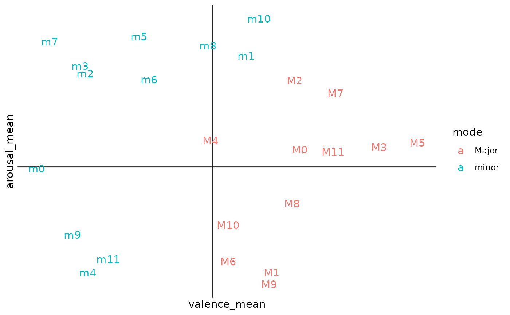
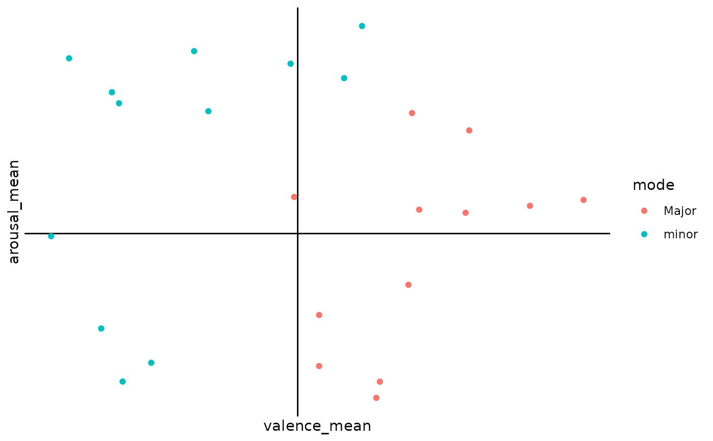
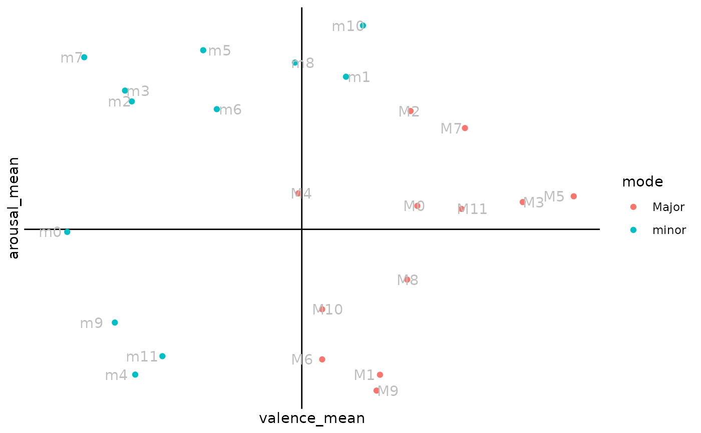

`r lifecycle::badge("stable")` Simple function to prepare a circumplex model based on user input.
plot_circumplex(
data,
x,
y,
label,
group,
yintercept = 50,
xintercept = 4,
add_points = FALSE,
add_text = TRUE,
...
)Tibble or data.frame object
Character. Column name for x variable. Should be passed as a string.
Character. Column name for y variable. Should be passed as a string.
Character. Labels to add to plot. Should be passed as a string.
Character. Column of group to colour-code observations by. Should be passed as a string.
Numeric. y intercept defining placement of horizontal line, defaulted to y = 50 as the midpoint for arousal ratings.
Numeric. x intercept defining placement of vertical line, defaulted to x = 4 as the midpoint for valence ratings.
Boolean. Option to add points marking observation; FALSE by default.
Boolean. Option to add text based on label input; TRUE by default.
Additional arguments passed to geom_text.
# Typical usage.
df <- subset(df_emosample, expID == 101)
df_circumplex <- df |>
dplyr::group_by(pieceID) |>
dplyr::mutate(
valence_mean = mean(valence),
arousal_mean = mean(arousal)
) |>
dplyr::select(
setCode,
albumID,
pieceID,
mode,
valence_mean,
arousal_mean
) |>
dplyr::distinct()
plot_circumplex(
df_circumplex,
"valence_mean",
"arousal_mean",
"pieceID",
"mode"
)

# Points only, no text.
plot_circumplex(
df_circumplex,
"valence_mean",
"arousal_mean",
"pieceID",
"mode",
add_points = TRUE,
add_text = FALSE
)

# Points with text.
plot_circumplex(
df_circumplex,
"valence_mean",
"arousal_mean",
"pieceID",
"mode",
add_points = TRUE,
color = "grey", # arg passed to geom_text
position = ggplot2::position_jitter(width = 0.2)
)
